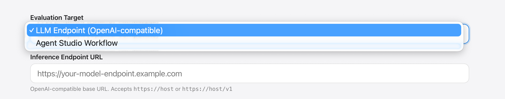
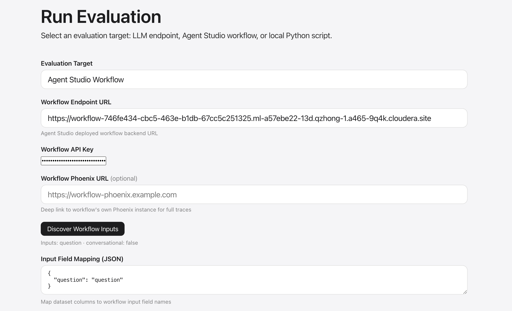
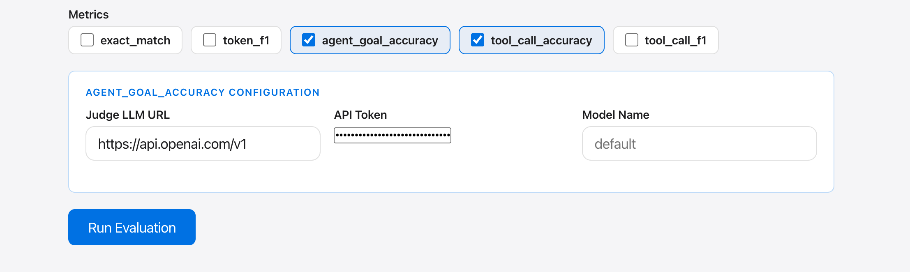
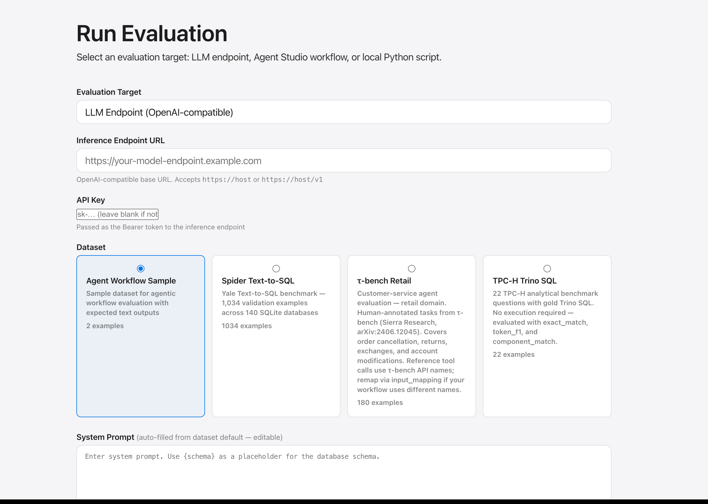
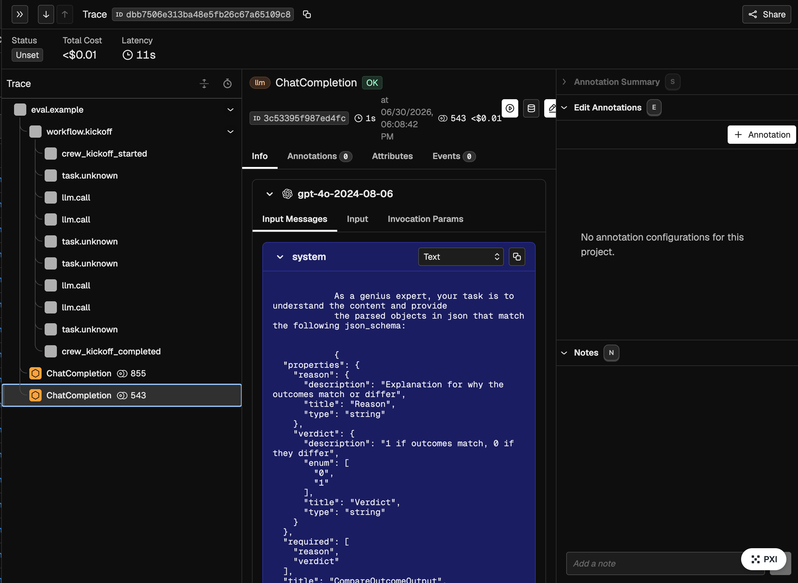
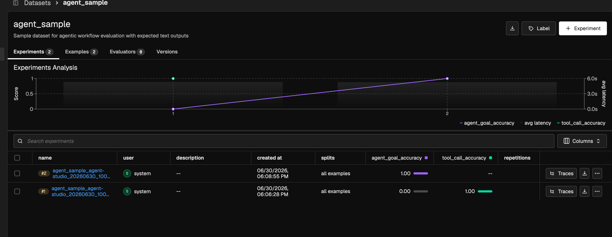

Agent Studio Workflow Evaluation¶
Black-box evaluation of deployed Cloudera Agent Studio workflows.
Selecting the eval mode¶

Choose Agent Studio Workflow from the evaluation target dropdown.
Configuration¶

| Field | Description |
|---|---|
| Workflow URL | Base URL of the deployed Agent Studio workflow |
| API Key | Bearer token for the workflow endpoint |
| Dataset | Any dataset with question or user_input fields |
| Input Mapping | JSON map from dataset field names to workflow input names |
| Workflow Phoenix URL | Optional: link to a separate Phoenix used by the workflow itself |
Click Discover Workflow Inputs to auto-populate the input mapping from your workflow's metadata.
Metrics¶

| Metric | Description |
|---|---|
agent_goal_accuracy |
LLM judge: did the final output achieve the user's goal? |
tool_call_accuracy |
Tool sequence and argument correctness vs reference |
tool_call_f1 |
Precision/recall for tool calls |
Ragas metrics require a judge LLM. Set JUDGE_LLM_URL (and optionally JUDGE_LLM_API_KEY) or provide them in Metric Config:
Evaluation entry¶

Trajectory tracing¶

Workflow events (crew_task_started, crew_task_completed, etc.) are converted to OTEL child spans and exported to Phoenix. Three tracing tiers:
| Tier | Mechanism |
|---|---|
| Eval spans | Each example wrapped in eval.example span |
| Event timeline | Workflow events → child spans in Phoenix |
| Workflow Phoenix link | Deep link to the workflow's own Phoenix instance (if provided) |
How it works¶
POST /api/workflow/createSession → session_id
POST /api/workflow/kickoff → trace_id
GET /api/workflow/events → poll until terminal event
Terminal events: crew_kickoff_completed or crew_kickoff_failed.
Experiment results¶

After the run completes, results and scores are uploaded to Phoenix as experiment evaluations visible in the Experiments view.